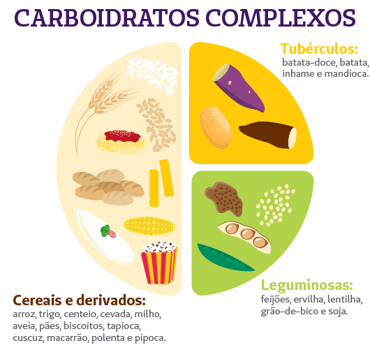
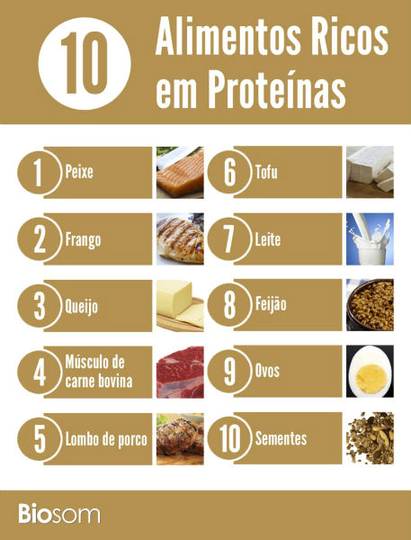

Carboidratos
Conhecidos como a principal fonte de energia do ser humano, os carboidratos são responsáveis por diversas funções de nosso metabolismo. Por atuarem como combustível para o corpo, seu baixo consumo pode causar diversos prejuízos — principalmente ao sistema nervoso central.
Sem os carboidratos, não conseguiríamos realizar nenhuma atividade, afinal, são eles que fornecem energia para as células do organismo. Além disso, sua carência pode resultar em dificuldades de concentração, falta de ânimo, fraqueza, cansaço, tonturas e dores de cabeça.
Os carboidratos se classificam da seguinte forma:
dissacarídeos: que compreendem a sacarose, lactose e maltose,
monossacarídeos: dos quais fazem parte a glicose, frutose e galactose;
polissacarídeos: grupo em que estão agrupados o amido, glicogênio, dextrina e celulose.
Esses macronutrientes são encontrados em abundância na maior parte dos grãos, vegetais e açúcares, e suas principais fontes são massas, pães, frutas, batatas e demais tubérculos — como batata-doce e mandioca.
Embora muitas dietas restritivas busquem a eliminação dos carboidratos, seu consumo é essencial para a manutenção de um corpo saudável. Por isso, o ideal é selecionar alimentos desse grupo que contribuam para uma melhor qualidade de vida, como as versões integrais.


Proteinas
Enquanto os carboidratos fornecem energia para o nosso corpo, as proteínas têm diversas funções, como a produção de hormônios, enzimas e anticorpos. Essenciais para uma vida ativa e saudável, elas atuam na restauração de proteínas corpóreas e contribuem com diversos fluidos, como muco, leite materno e esperma.
Além disso, as proteínas auxiliam na construção de tecidos como pele e músculo e, ainda, ajudam na formação da estrutura do organismo. Estão em alimentos de origem vegetal e animal e se classificam em 3 grupos, sendo:
proteínas de alto valor biológico: que apresentam aminoácidos essenciais em proporções adequadas — é o caso dos ovos, peixes e carnes vermelhas;
proteínas de baixo valor biológico: seus aminoácidos essenciais não estão presentes nas proporções ideais, caso das leguminosas e cereais integrais;
e proteínas de referência: neste grupo, estão presentes os alimentos com aminoácidos essenciais em quantidades elevadas, como o leite e os ovos.
As proteínas podem ser encontradas nos mais variados tipos de alimentos, como ovos, leite e derivados, carne branca e vermelha, peixes, oleaginosas e leguminosas — como grão-de-bico e soja.
Lipídios
Também conhecidos como gorduras, os lipídios têm diversas funções no organismo. Importantes isolantes térmicos, eles compõem nossas estruturas celulares e conferem maior palatabilidade aos alimentos.
Assim como os carboidratos, eles são fontes de energia e força para o nosso corpo, já que atuam no transporte de nutrientes. Apesar de muitas dietas restringirem o uso de gorduras, seu consumo é essencial, afinal, elas são responsáveis pela produção de hormônios.
No entanto, é importante ter equilíbrio no consumo desse macronutriente — em excesso, pode causar problemas de saúde como obesidade e diabetes. Alimentos como manteiga, óleos, queijos, carnes, gema de ovo, creme de leite, abacate e oleaginosas (nozes, castanha, amendoim) são as principais fontes de lipídios.
Uma maneira saudável de consumir esse elemento é combinar com outros tipos de nutrientes, como no quibe assado com castanha-do-pará ou no arroz-jasmim com castanha de caju e cebolinha. Outra dica é incluí-lo nos intervalos entre as refeições no formato de snacks saudáveis. Além de práticos e funcionais, são opções muito saborosas para a hora do lanche.